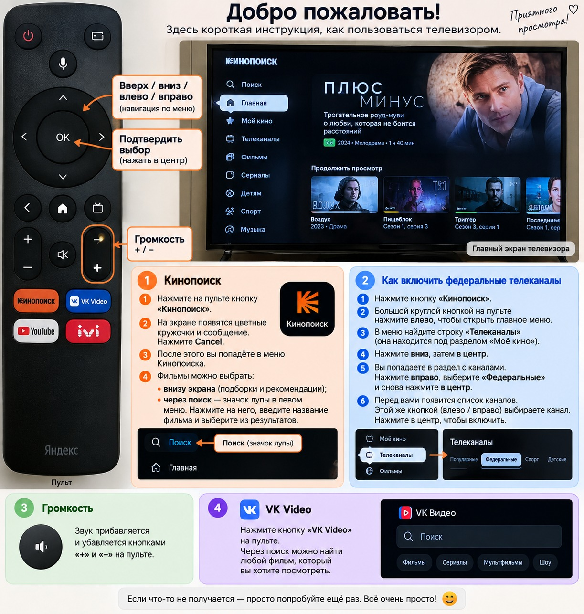
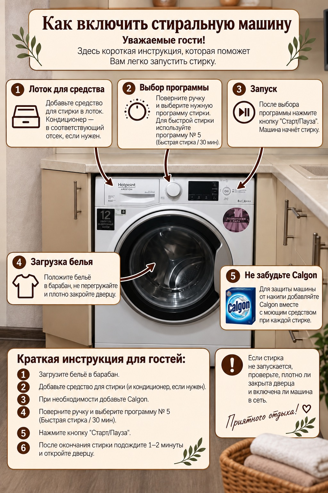
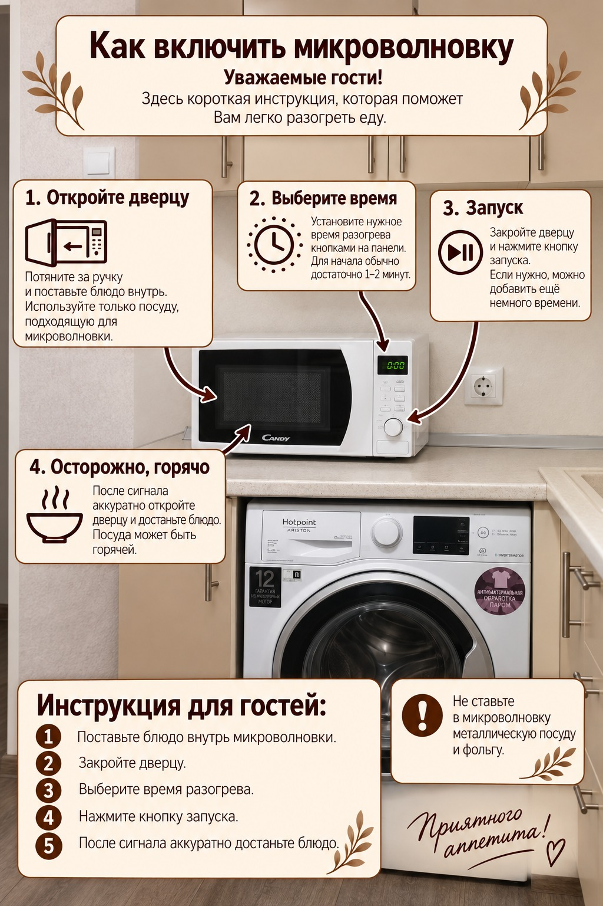

Телевизор

Кинопоиск, федеральные каналы, VK Видео и регулировка громкости.
Для вашего удобства
Выберите нужную инструкцию. Нажмите на изображение, чтобы открыть его крупно.

Кинопоиск, федеральные каналы, VK Видео и регулировка громкости.

Для быстрой стирки используйте программу № 5. Не забудьте добавить Calgon.

Короткая инструкция по разогреву еды и безопасной посуде.